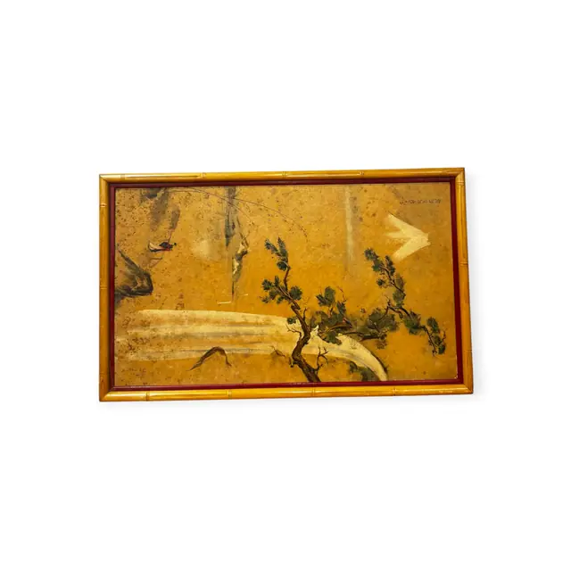
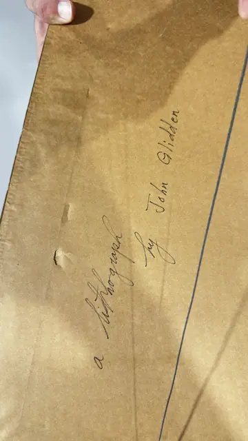
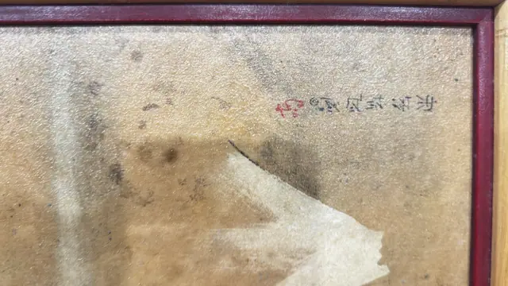

Paintings & Prints
East Asian Pine and Waterfall on Gold Ground, Signed, Framed
· 20th century
Price Upon Request



About the Item
A horizontal landscape on a warm gold-ochre ground in which a twisted pine leans in from the right, its needle clusters dabbed in dark green and blue-green. Pale bands of white and cream sweep across the lower left to read as falling water and mist, with dark ink rocks anchoring the upper left corner. The ink work is calligraphic and economical, and a column of brushed characters with a red seal sits in the upper right. Medium: lithograph after an East Asian ink and colour painting. Signed upper right of the image: a vertical column of brushed characters with a red seal at its foot. Inscribed on the reverse or mount: a lithograph by John Glidden (pen, on the brown paper backing of the frame). Condition: The ground shows age toning, scattered dark specks and foxing-like spotting, with lighter rubbed patches in the pale water area. The brown paper backing is creased, dented and torn along one edge.
Details
- Creation Year:
- 20th century
- Medium:
- lithograph after an East Asian ink and colour painting
- Period:
- 20Th
- Condition:
- Offered in the condition shown in the photographs.
- Reference Number:
- VO-197
- Documentation:
- no certificate; the only documentation is the handwritten note on the paper backing
- Gallery Location:
- a lithograph by John Glidden (pen, on the brown paper backing of the frame)